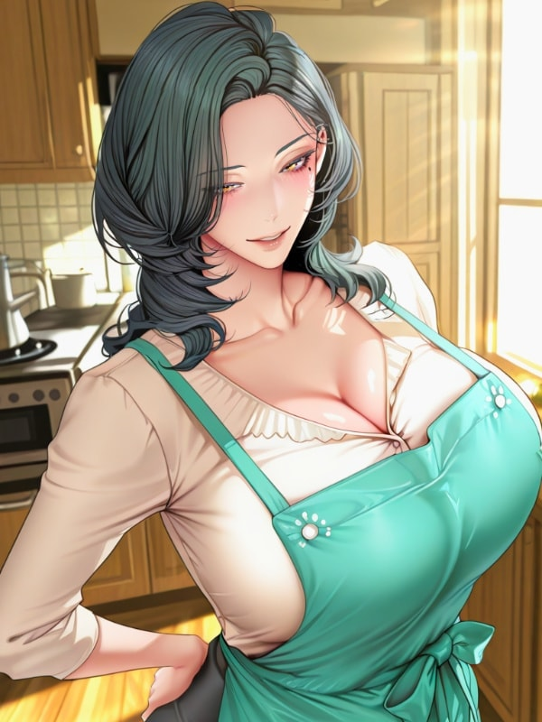

Villain: 10x Rewards Begins With The Protagonist's Mother
← Back to Library
Chapter 1 - If the Protagonist Can Become a Dragon, Then I’ll Become His Daddy
Chapter 2 - The Protagonist Is Untouchable, So I’ll Touch Every Woman Around Him
Chapter 3 - I Checked My Excalibur Before My Stats Because I Have Priorities
Chapter 4 - My Master Killed a Dragon and All She Got Was a Destroyed Body and an Ungrateful Son
Chapter 5 - She’s Over 100 Years Old and Running Out of Time. I’m on Day 1 and Running Out of Shame
Chapter 6 - Her Body Was God-Sculpted and Her Morning Was Devil-Scripted, Guess by Whom
Chapter 7 - The Wheel Was Rigged from the Start and So Was Her Whole Damn Day
Chapter 8 - The Bodyguard Asked If I Wanted a Princess Carry and My Soul Left My Body
Chapter 9 - My Master Is Definitely A Mommy Material And A Natural At That
Chapter 10 - My Master Wanted Me to Stop Moving and I Stopped Right After My Hands Reached Her Ass
Chapter 11 - She Gave Me the Real Her and I Had to Hold on to the Fake Me With Both Hands
Chapter 12 - My Master Cried for the First Time in Decades and I Almost Forgot I Was Supposed to Be Scheming
Chapter 13 - Ryan, It Hasn’t Been 24 Hours and Your Mom Is Already Carrying Me to Bed
Chapter 14 - She Was Burning Alive on the Inside and Looking Like a Sin on the Outside
Chapter 15 - I Already Have an Excalibur Between My Legs, Why Would I Buy Another One
Chapter 16 - I Watched Her Shower for Research Purposes and Found Out She’s Pink
Chapter 17 - My Master Created a Group Chat to Find the Leaker and the Leaker Was Sitting in Her House
Chapter 18 - The Original Dante Missed Every Shot and I’m Taking Every One That’s Left on the Court
Chapter 19 - My Master Princess Carried Me Yesterday for a Task and Today for Habit, Tomorrow Will Be on Purpose
Chapter 20 - She Wiped Her Student’s Face Like a Mother and Froze at His Chest Like a Woman
Chapter 21 - My Master Underestimated Me And Overestimated Ryan’s Father By A Lot. A Lot of Inches
Chapter 22 - The Towel Had One Job and It Quit at the Worst (Best) Possible Moment
Chapter 23 - She Came in to Wipe Her Student and Left Wiping Her ’Crime’ Off Her Fingers
Chapter 24 - My Whole First Life Was a Nightmare, If This Is a Dream Let Me Stay
Chapter 25 - She Saw Me as a Man for the First Time and Made the Excuse Old Enough to Be My Mother
Chapter 26 - I Made Ryan’s Father the Example of a Small Dick Man and Got Paid for It
Chapter 27 - The Original Dante Made Emma Cry, I Made Her Type With Both Hands Shaking
Chapter 28 - She Said Don’t Push Yourself Too Hard and I Pushed Myself Right Off a Bridge
Chapter 29 - The Story Called Him the Protagonist Because He Won, Not Because He Was Right
Chapter 30 - My Guards Thought I Was Avenging Ryan and I Almost Laughed Out Loud
Chapter 31 - Every Woman in This Novel Got a Free Stat Buff and a Guaranteed Ticket Into Ryan’s Harem
Chapter 32 - My Master Held Back From Destroying the Devereux Family and the Reason Was Her Own Son
Chapter 33 - I Wrecked Enough Bases for Crimson Hollow to Send Me a Job Application
Chapter 34 | Ryan Had a Harem the Size of a Football Team but Killed a Woman for Having a Starting Lineup
Chapter 35 | I Was Supposed to Be the One Getting Tested and Somehow She’s the One With a Gun on Her Head
Chapter 36 | We Walked Past 100s Of Men Who Wanted to Kill Me and Not One of Them Had the Balls to Try
Chapter 37 | Freya Asked What’s the Next Move and I Couldn’t Say It’s Your Madam
Chapter 38 | The Mission is Called Let Him Cook and the Ingredient is My Master